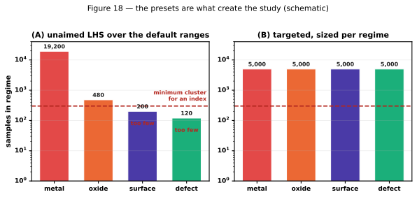

Stage 4 — Aim the sampling¶
Purpose¶
Give every regime enough draws to support an index. On the default ranges one regime holds almost the whole sample, so the others are not under-resolved — they are absent. This stage measures how often each preset actually hits its regime, then sizes and runs a scan per regime from that measurement.
Important
This is the stage that creates the study. Without it there is one regime and no comparison to make.
At a glance¶
Inputs |
|
Outputs |
|
Code |
|
Cost |
A probe of 250 draws per regime — about 15% — then the real scans |
Concepts¶
A preset is a set of range overrides that pushes the sampler towards one regime. A
preset’s yield is the fraction of its draws that land in the regime it targets. The
draw count you want is target / yield, but the yield is only knowable by running the
preset — which is the circularity this stage breaks.


Figure 18. Schematic. Look at the dashed floor: under an unaimed sample three of the four regimes sit below the minimum cluster size, so no index can be computed for them at all.¶
Procedure¶
For each regime, run a cheap probe of
probe_n=250draws under that regime’s preset. The probe is its own LHS and is discarded.Measure the yield: the fraction of probe draws whose label matches the target regime.
Refuse with an explanation if the yield is zero — a preset that never hits its regime cannot be sized, only fixed.
Size the real run as
target_cluster / yield × safety, withsafety = 1.15.Refuse to size a run above
n_max = 200000, and say why.Run one clean scan per regime at the sized draw count, saving
scan_<regime>.csv.load_regime_scansreloads them, checking the study stamp.
Design choices¶
Why a probe rather than a cached yield. The yields used to be measured once by hand
and pasted into the configuration as MEASURED_YIELDS_*. That cache went stale
silently: edit any range or preset and the numbers still looked authoritative while the
clusters came out unbalanced — which makes a cross-regime comparison partly a
comparison of estimator noise rather than of sensitivity. The probe costs about 15% and
is correct for whatever study, material, temperature and preset are active.
Why safety = 1.15. The probe yield is a binomial estimate. At the hardest preset
observed — surface, with yield around 0.23 — a 250-draw probe has a standard error
near 0.027, about 12% relative. Without a margin the cluster lands short roughly half
the time.
Why n_max refuses rather than warns. A preset targeting an unreachable regime
otherwise asks for a silently impossible scan, and the run simply never finishes.
Refusing names the preset.
Why one clean design rather than concatenated batches. Topping up a short cluster by appending another batch produces a sample that is not a Latin hypercube over anything, which undermines the space-filling property the estimators rely on. The probe is discarded and the real scan is run once, correctly sized.
Checks and failure modes¶
Symptom |
Meaning |
|---|---|
|
The preset never hits its regime. Fix the preset; no draw count will help. |
Refused: above |
The regime is effectively unreachable on these ranges. |
A cluster lands short anyway |
Probe noise. Raise |
A preset that pins nothing |
Caught at stage 1, and now fails loudly. It would otherwise produce an unaimed scan wearing a regime’s name. |
A parameter pinned by the preset ranks below the floor |
Expected, and not a statement about its physical leverage — Figure 20. |
Clusters balanced but indices still noisy |
|